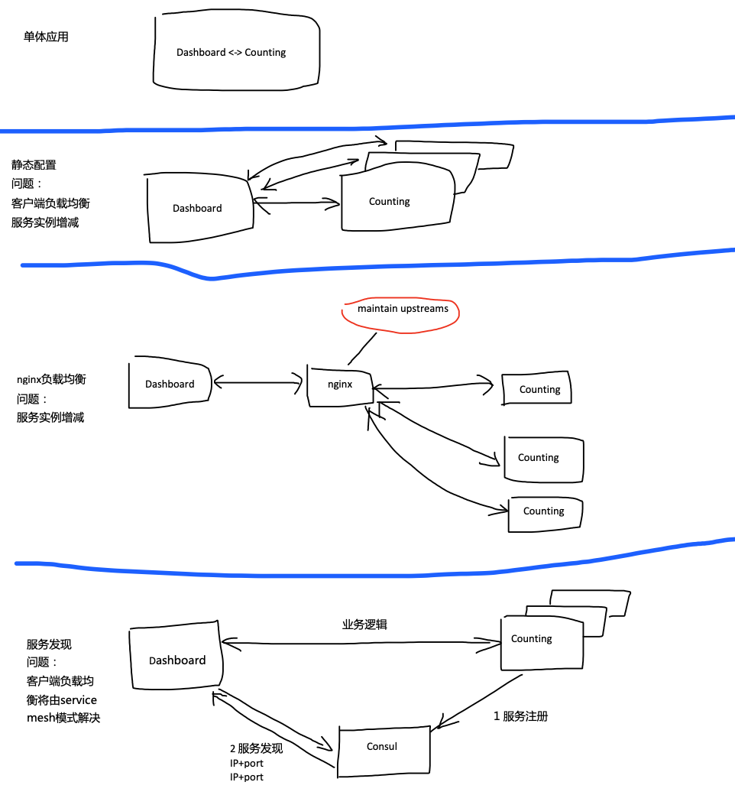
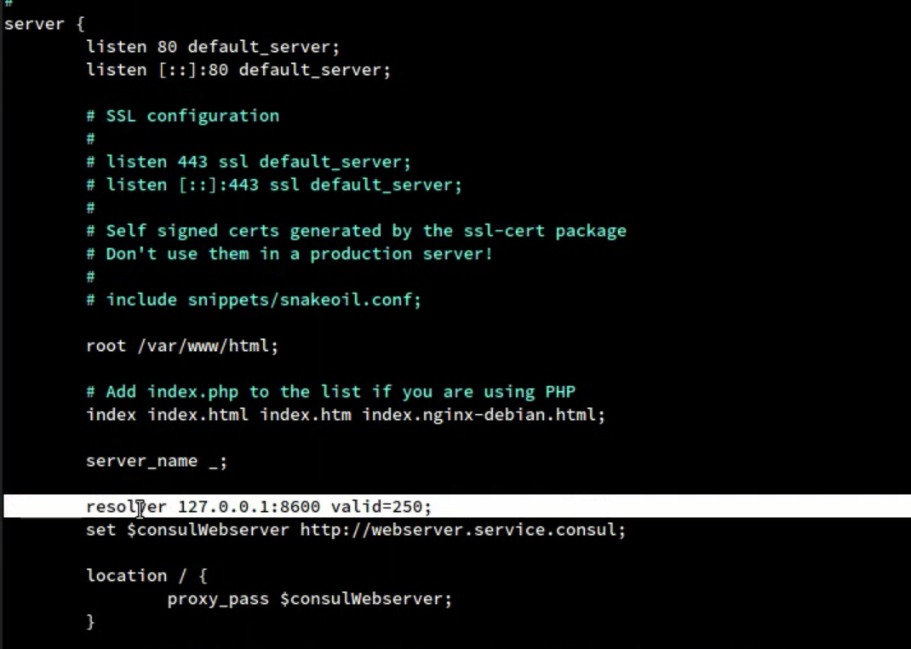
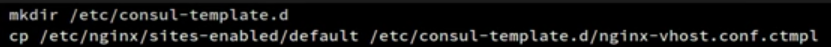
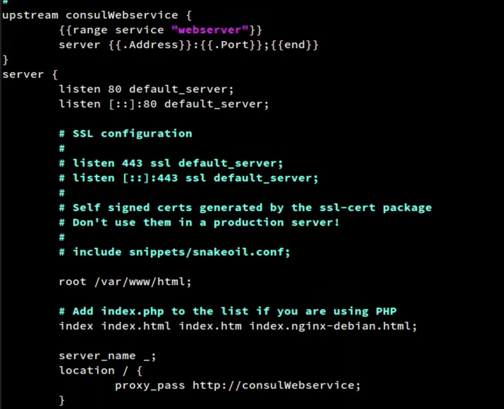
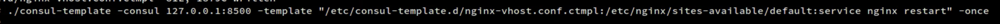
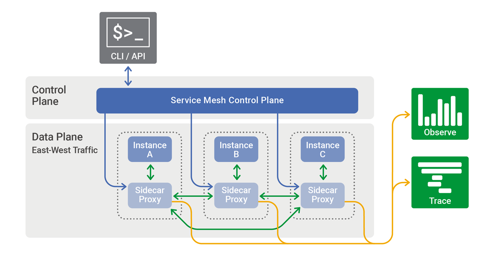
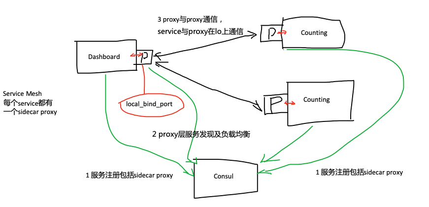
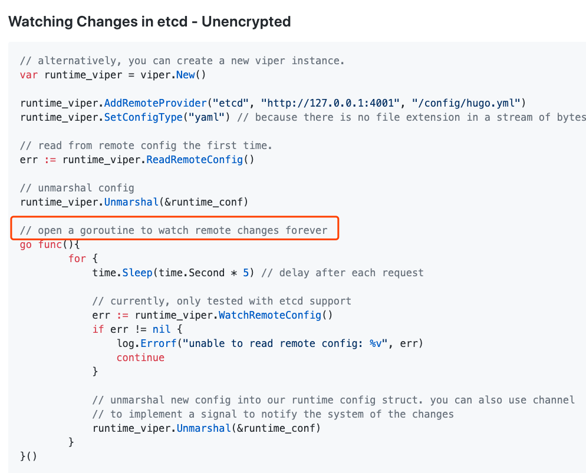

Consul简介
Consul 是 HashiCorp 公司推出的开源分布式服务发现与配置系统。
- 服务发现。特别是搭配Consul Connect（Service Mesh），可达到一种无侵入式的服务发现和客户端负载均衡。
- Key/Value 存储 作为配置中心。
- 使用 Raft 算法来保证一致性。
- 支持多数据中心。
- 支持健康检查：服务注册的时候可以提供健康检查项，服务发现会过滤掉不健康的service。
- 支持 http 和 dns 协议接口。
- Web 管理界面。
- 没有长连接，轮询方式可能不够及时。
核心概念
- consul agent server：维护核心状态并参与leader选举。server节点一般建议3个或是5个，测试用1个即可。写压力大的集群，考虑升级服务器实例的配置和低延迟的存储。（TIP For write-heavy clusters, consider scaling vertically with larger machine instances and lower latency storage. https://learn.hashicorp.com/consul/datacenter-deploy/reference-architecture）
- consul agent client：与其他agent联通，并消息中转。每个主机都有一个agent的好处是，只要与本地agent通信，不用设置CONSUL_HTTP_ADDR，代码也不用指定这个地址。方便无脑操作。(In a multi-agent Consul datacenter, each service would register with its local Consul client, and the clients would forward the registration to the Consul servers, which maintain the service catalog. https://learn.hashicorp.com/consul/getting-started/services)
- node：一般是一个node一个agent。consul DNS name规则：{node_name}.node.consul
- service：一个service对应多个service实例，注册时使用相同的service_name，并使用不同的service_id区分实例。consul DNS name规则： {service_name}.service.consul
入门资料
此文就不做复读机了。
- Getting Started 安装、运行Consul，使用Consul服务发现与配置读写 https://learn.hashicorp.com/consul?track=getting-started#getting-started
Consul 服务发现
微服务与服务发现
从单体应用拆分为微服务，虽然有诸多好处比如不同发布周期的模块拆分平衡了系统稳定性和发布频率，但天下没有免费的午餐。
以服务发现这个角度看：原来的函数级调用，变成了网络服务级调用。怎么找到网络服务，即其IP+port呢。
几种方式：
- 配置在静态文件。不建议使用，无法应对动态增减服务实例的场景。
- 还是配置在静态文件，但配置的是一个负载均衡器比如nginx的地址。其实就是把动态增减服务实例的问题转嫁到了负载均衡器上。调用方也少了做负载均衡的工作。关于nginx处理动态增减服务实例的解决方案，可以参考下节「实践：基于consul的nginx动态upstream」。
- 从某中心服务器取，或是轮询或是被通知的方式知道了最新的服务地址。consul 就是这里的中心服务器（集群）。

服务注册
Consul有2种方式注册服务：
- consul命令
- HTTP请求
健康检查
DNS解析或是HTTP取的方式服务发现，只返回通过健康检查的实例。也就是没通过check的服务实例，不会出现，不担心拿到”脏“服务。
如果服务没有加入健康检查项，默认是健康的。加入健康检查是非常有必要的。还可以设置自动注销，一直不通过检查，就注销该服务实例。
服务发现
- DNS解析
- HTTP请求
示例代码
参考文章：基于consul构建golang系统分布式服务发现机制 https://segmentfault.com/a/1190000008471221
简单介绍下，使用Consul HTTP API（有Golang的封装包），进行服务注册和服务发现。
一些问题
- 服务注册、服务发现都在业务代码中。能不能让业务程序无感知？
- 对于服务调用方来说，需要自己处理负载均衡。貌似也能通过共享库的方式解决。是否能把这些重复逻辑下沉到基础设施层面？
参考
- Service Discovery https://learn.hashicorp.com/consul/getting-started/services
- 基于consul构建golang系统分布式服务发现机制 https://segmentfault.com/a/1190000008471221
实践：基于consul的nginx动态upstream
以下两种实践参考这个youtube视频：https://www.youtube.com/watch?v=KgTtQnXrnMk。简单提重点。
使用 consul DNS接口
nginx的resolver关键字指定consul的DNS地址：

使用 consul-template 动态生成upstream文件
创建模板：

在模板中定义upstream：

根据consul配置信息，刷新nginx配置（然后nginx reload，并自行配置定时刷新周期）：

业务程序如果也支持动态reload，业务程序的服务发现也能像以上nginx的做法一样。
参考
- consul-template https://learn.hashicorp.com/consul/developer-configuration/consul-template
- Manage local application configuration files using templates and data from etcd or consul 与consul-template的思路是一样的 https://github.com/kelseyhightower/conf
使用 nginx module
An nginx module for setting backends from Consul services. https://github.com/hashicorp/ngx_http_consul_backend_module
Service Mesh 简单介绍
Service Mesh是微服务治理的一种模式。
核心理念就是将业务逻辑无关的代码下沉到基础设施。
Service Mesh 的代理实例会完成完整的服务间通信的调用流程，如服务发现、负载均衡等基本功能，熔断、限流、重试等容错功能，以及各种高级路由功能，安全方面的认证、授权、鉴权、加密等，最后将请求发送给目标服务。最终表现为Sidecar模式，实现和传统类库类似甚至比传统类库更完备的功能。

（来源互联网）
sidecar是一种不侵入代码的方式，sidecar服务劫持了原服务的流量，sidecar服务与原服务之间使用lo网卡通信。 Connect proxies are typically deployed as “sidecars” that run on the same node as the single service instance that they handle traffic for. They might be on the same VM or running as a separate container in the same network namespace. https://www.consul.io/docs/connect/registration/sidecar-service.html
Service Mesh比较成熟的技术有
- Istio：理论上是平台无关的，但实际上，与Kubernetes绑定比较紧密。
- Consul Connect：与Kubernetes没那么强的绑定了。
Consul Connect
Consul Connect是Service Mesh模式的实现。可以理解为Consul服务发现的升级版。
服务包括sidecar服务的注册只是个注册，实际的进程需要开发者自己创建的。Sidecar service registrations are only a shorthand for registering multiple services. Consul will not start up or manage the actual proxy processes for you. https://www.consul.io/docs/connect/registration/sidecar-service.html
示例 consul-101
这个例子。https://github.com/hashicorp/demo-consul-101
简单说明：
consul agent -dev -config-dir="./demo-config-localhost" -node=laptop这里已经完成了service和proxy的注册。这个可以后续脚本化，按需服务注册。- service本身都不做服务发现和负载均衡。这些事情交给了 sidecar proxy。以dashboard service为例，
countingServiceURL = getEnvOrDefault("COUNTING_SERVICE_URL", "http://localhost:9001")，默认读的是本地的9001端口，也就是proxy的绑定端口。这就是劫持流量。 consul connect proxy -sidecar-for counting-1需要手动为service创建proxy。这个可以后续脚本化。- 能看出Consul Connect /Service Mesh的好处了：不再侵入业务代码。重复的事情已下沉到基础设施，sidecar proxy处理。
基于 Consul Connect 的服务发现思路整理
非K8S环境。其中调用方为dashboard，被调用方为counting。
- 网络内的所有主机都安装了consul，或是server，或是client。
- 基于Consul命令行工具和Consul Connect的能力，让服务注册及服务发现不侵入业务代码。
- counting服务注册流程：准备以下脚本并执行。脚本主要做三件事情。
- 1）启动counting服务。counting服务对consul无感知。这里端口可以是动态的，只要让脚本第二步知道即可。
- 2）向本地consul注册服务包括sidecar proxy，包括两个服务的健康检查，需要的信息有当前主机IP地址、应用端口等（consul client会转发到consul server的）。
- 3）本地创建sidecar proxy服务实例。
- Consul接到counting服务注册后，开始定期健康检查。
- dashboard服务注册流程：与counting服务类似，但是加入了counting proxy upstream部分。比如 https://github.com/hashicorp/demo-consul-101/blob/master/demo-config-localhost/dashboard.json#L7
- dashboard服务访问counting服务流程。
- 1）dashboard与本地sidecar通信。
- 2）dashboard sidecar负载均衡，选择一个counting服务。
- 3）dashboard sidecar与counting sidecar通信。
- 4）counting sidecar与counting服务通信。
- 5）response，同一个通信链路原路返回。

Consul Connect with Envoy
生产环境，sidecar proxy使用Envoy。Consul comes with a L4 proxy for testing purposes, and first-class support for Envoy, which you should use for production deployments and layer 7 traffic management.
Envoy
Envoy编译貌似很复杂。可以把envoy编译产物从镜像里copy出来。 Envoy is only distributed as a Docker image.
https://learn.hashicorp.com/consul/developer-mesh/connect-services
DEMO TODO
配置中心
Service Configuratio 配置文件序列化并存入consul kv https://learn.hashicorp.com/consul/getting-started/kv
viper remote
viper支持从consul/etcd取配置信息。 https://github.com/spf13/viper#remote-keyvalue-store-support
consul/etcd没有长连接啊，没有通知，只能定时轮询。Viper内置的库也是HTTP请求。每5秒，去取下最新的配置。

Last modified on 2020-03-26